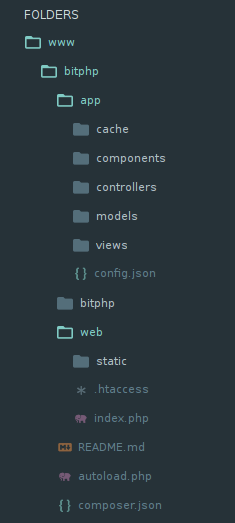

Primeros pasos¶
La estructura de ficheros¶
Si seguiste la guía de instalación al pie de la letra, dentro de la carpeta /var/www/bitphp debes tener lo siguiente:
En dónde:
- app es el directorio de la aplicación (modelos, controladores, etc.)
- bitphp ficheros fuente de Bitphp
- web aquí irán ficheros como hojas de estilo, javascripts, imagenes, y el index.php
- autoload.php es el fichero para la autocarga de clases
Dentro de la carpeta app van todos los componentes de la aplicación:
Hola mundo¶
En la carpeta /app/web/ se encuentra el archivo index.php, en este se definen las rutas, vamos a editarlo y substituir su contenido por:
<?php
require '../autoload.php';
use \Bitphp\Route;
Route::match('GET /hello', function() {
echo "Hola mundo!";
});
Y al ir la dirección http://localhost/hello podremos ver:
¡Está todo listo!